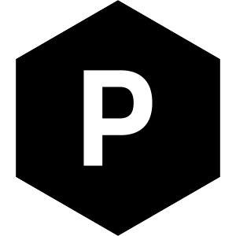

<footer>
    <div class="container">
        
        <div class="copyright">
            <p>{{ 'footer.copyright' | translate }}</p>
        </div>
        <h4 class="title-footer">{{ 'footer.followMe' | translate }}</h4>
        <div class="footer-column">
            <ul class="social-icons">
                <li><a href="https://www.facebook.com/profile.php?id=100061123026138" target="_blank" rel="noopener noreferrer" aria-label="Visitar perfil en Facebook"><svg viewBox="0 0 24 24" xmlns="http://www.w3.org/2000/svg" aria-hidden="true"><path [attr.d]="icons.facebook"/></svg></a></li>
                <li><a href="https://wa.me/573213461519" target="_blank" rel="noopener noreferrer" aria-label="Contactar por WhatsApp"><svg viewBox="0 0 24 24" xmlns="http://www.w3.org/2000/svg" aria-hidden="true"><path [attr.d]="icons.whatsapp"/></svg></a></li>
                <li><a href="https://www.instagram.com/daniel.callderon_/" target="_blank" rel="noopener noreferrer" aria-label="Visitar perfil en Instagram"><svg viewBox="0 0 24 24" xmlns="http://www.w3.org/2000/svg" aria-hidden="true"><path [attr.d]="icons.instagram"/></svg></a></li>
            </ul>
        </div>
    </div>
</footer>
